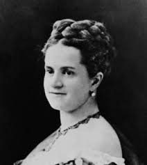
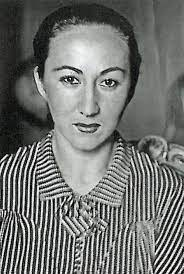
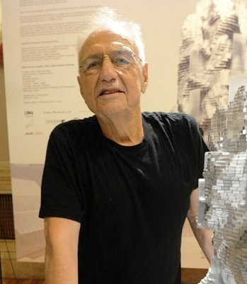

En esta página web podrás encontrar cuatro personas importantes en el ámbito de la arquitectura y la construcción.
Fue una de las ingenieras más destacadas a nivel mundial, de origen estadoundense. Lideró la construcción del puente de Brooklyn gestionando y supervisando la obra en el año 1883.
 mas informacionFue la primera mujer licenciada en arquitectura en España y la única mujer miembro de la Junta del Gobierno del Colegio de Arquitectos de Madrid en el año 1936. Entre sus principales obras podemos mencionar la Casa Oswald y las Librerías Turner e Hispano-Argentina en Madrid. En el año 2004 recibió el Premio Nacional de Arquitectura.
 mas informacionAgricultor y albañil que dedicó 60 años de su vida aconstruyendo con sus propias manos una catedral en Mejorada del Campo
mas informacionFrank Gehry está considerado como uno de los arquitectos más importantes e influyentes del mundo, ha sido galardonado con los más prestigiosos premios en el campo de la arquitectura. Incorpora nuevas formas y materiales y es especialmente sensible con su entorno. El Museo Guggenheim Bilbao es una de sus obras más conocidas.
 mas informacion